A cube volume and a dual-grid surface, reached from a scan or from a field
Preprint
A cut face is the one surface a viewer inspects and the one no reconstruction ever saw. Methods
that fill an object's interior with rendering primitives draw it by whatever primitives happen to
lie near the plane; we make it exact. We reach one two-level cube lattice by two independent routes. One quantises a released Gaussian reconstruction; the other generates
the topology from a signed-distance field and projects six rendered views onto the skin. The
visible face of a cut is then a convex polygon per crossed cell, solved in closed form. No
primitive is asked to approximate the plane, so the only error in a cut is the voxelised
silhouette, and cut areas match \(\pi r^2\) and \(4\pi Rr\) to 1.0% and
1.3%. It holds the same watermelon in 1,065,856 cells generated or 1,741,169 quantised, against FruitNinja's 7,959,789 primitives and GaussianFluent's 1,381,100, and counting everything each method needs, the sparse index and the exterior surface included, in 62.6 or 163.5 MiB against 425.1 and 310.8. Coverage separates them only once resolution is varied: at 512 px every released model leaves under a percent of a cut face unpainted, and by 2048 px GaussianFluent's section is 38.7% background, FruitNinja's 2.4% and our own splatted lattice's 3.3%, while the same lattice drawn as a cube volume moves from 0.04% to 0.07% over three octaves. An earlier version of this work claimed a coverage gap at one image size from a footprint convention no rasteriser uses; that claim is withdrawn and this one replaces it. What separates them is what coverage costs. Sweeping a Gaussian's support over four decades on a fixed primitive set, 16 to 45% of a section is unpainted at \(\rho \le 0.01\) and boundary blending rises through \(\rho = 2\); FruitNinja sits at \(\rho = 3\times10^{-5}\), four decades to the left of that window, and GaussianFluent's support is two orders smaller again though its own spacing is not published, so they buy coverage with count instead. A cube's support is its cell, so it covers exactly at any resolution with nothing to set.
Cutting is discrete on the lattice and analytic on the boundary: connected components label the
pieces and one solver runs per piece. Generating the topology also makes the skin band a free
parameter, which decides whether an MPM solver can resolve a stiffness contrast at all. The
shell is 0.87 to 2.00 grid cells on the existing objects, and building it at the predicted width
crosses the predicted threshold and the sign of the solver's response is opposite on either side
of it, on one run per setting and with the uniform control not yet in. Collision is then three
integer operations, and the one that matters is a sign test against the cut plane: at rest it takes
the 2,698, 2,699 and 943 particles a voxel occupancy claims are inside the other half on the three
objects down to zero, which equation (9) makes a consequence rather than a finding, while
penetration under a real push grows monotonically.
Route 2 needs no fine-tuned diffusion model, and route 1 needs none beyond whatever produced the
model it quantises, which is what the comparison turns on.
FruitNinja's published interiors come from a model fine-tuned on the object's own photographs, and
that model is not released. Run from its own code with a stock checkpoint instead, its transverse
FID on the orange goes from 102.2 to 378.7, an upper bound
since the two runs also differ in training budget; removing object-specific supervision from this
work's own pipeline, at fixed code and budget, improves it by 1.4 points,
from 91.5 to 90.1. Both prior methods' released models
go through one evaluator on the same held-out planes: on the orange every arm here beats
FruitNinja's 102.2, and on the watermelon GaussianFluent's own model takes the best FID at 170.2
against our 180.9, from 1,381,100 primitives in 310.8 MiB against 1,065,856 cells in
62.6.
Three planes, eight pieces, drawn apart
and back. Each object is a cube volume, drawn as the faces of its own cells. No dual
grid and no Gaussian anywhere in the picture: multicut_gif.py takes the six cube-face
offsets and nothing else from the surface code, so what is on screen is the blocky boundary the
lattice actually has. The pieces come out of connected-component labelling on the lattice; the
colour on every exposed face is read from the volume that was already there, and no face is
tinted.
A reconstruction of a real object knows only its outside. Photographs see a surface, so a model fitted to photographs has a surface and nothing behind it, and the moment such an object is cut open the cut reveals an empty shell. That is a problem for any application in which objects are handled rather than merely viewed, such as surgery rehearsal, food and material simulation and games in which things break. It is the problem FruitNinja addresses by generating an interior that is plausible rather than measured, supervising it with depth-conditioned diffusion on cross-sections.
FruitNinja generates an object's interior so that cutting it open reveals something plausible, and stores it as a cloud of small opaque Gaussians. The previous project in this series put the whole object, interior and skin alike, on a two-level voxel lattice with one Gaussian per occupied cell, which made cutting answerable by connected-component labelling, separated material without supervision, and freed appearance from render resolution. This work asks what the interior primitives are still for.
They are doing two jobs. As volume they answer whether space is occupied, which cells are connected, which piece a point is in, and what a colliding body has hit. As image they are splatted, blended and composited. Filling a hidden volume with a rendering primitive is paid for in count. FruitNinja's released watermelon holds 7,959,789 primitives at a million per unit volume, each with a support scale of \(1.11\times10^{-7}\) against a nearest-neighbour spacing of 0.0036. Those are points rather than blobs, and they overlap nothing. Making each primitive smaller does not reduce how many are needed.
The resolution is to stop asking one primitive for both jobs. A cube's support is its cell, so a solid occupancy renders solid at any resolution with nothing to tune, and a dual-grid surface has an explicit polygonal boundary, so coverage comes from triangles rather than from primitives dense enough to hide the gaps between them.
Three things follow. The volume becomes solid, because a cube's support is its cell and a gap is therefore a hole rather than a coverage parameter. The cut becomes exact, because a plane through a cube is a polygon in closed form rather than a plane approximated by primitives. The shell becomes a parameter, because route 2 builds the lattice from a field, so the skin band is a number given to the builder, and that number decides whether an MPM solver can resolve a stiffness contrast at all.
The two routes are how that separation is reached. A scanned object is quantised onto the lattice; an object nobody scanned has its topology generated from a signed-distance field and its skin projected from six rendered views. Neither needs a fine-tuned generative model, which is what makes the comparisons here comparisons rather than assertions.
Interior generation. FruitNinja [3] supervises an object's interior with depth-conditioned diffusion on cross-sections and stores it as opaque atomic Gaussians. We keep that supervision unchanged, since the contribution here is not a new way to invent an interior, and change what holds it. The lattice it is quantised onto, and the baseline every number here is measured against, is the previous project in this series [4]; the two before it are Gaussian splatting [1] and the radiance fields it descends from [2]. Solid texture synthesis [30] asked the same question before diffusion existed, and InFusion [31] and InnerGS [32] answer it for scenes rather than for objects that are cut.
Surface representations for generated 3D. TRELLIS.2's O‑Voxel [11] is a field-free sparse voxel surface: a Flexible Dual Grid in which every active voxel carries a dual vertex and grid-edge intersection flags, handling open, non-manifold and fully enclosed internal surfaces. We use its official encoder without reimplementing it, for the cut face and then for the whole exterior.
Dual contouring. The dual vertex is a quadric's minimiser [6], and quadrics are additive over their planes. That is what lets an adaptive grid be built by collapsing, and the collapse's error be read off the same quadric that placed the vertex. Marching cubes [5] is the alternative that places vertices on edges instead, and cannot represent a feature inside a cell; quadric error metrics [9] are where the additivity comes from, and dual marching cubes [7] and feature-sensitive extraction [8] are the two nearest relatives of what is used here.
Physics on primitives. PhysGaussian [19] simulates Gaussians with MPM. We keep the existing particle set and give it piece identity, so subdividing a cut band multiplies leaves and not particles. The solver is MPM [20, 21] in the moving-least-squares form [22], and the surface follows it by the same weighted-sum binding that skinning [25] and embedded deformation [26] use, which is why an affine motion is followed exactly.
Mixed materials and fracture. GaussianFluent [24] is the nearest current work and reaches the same two obstacles from the other side: it densifies an interior with generative guidance and then simulates brittle fracture with a continuum-damage MPM, handling mixed-material objects in one solver. Where it makes the interior denser so that a Gaussian representation can carry it, this work removes the rendering primitive from the interior entirely, so the comparison worth drawing is not which fractures better but what each pays to hold a volume. The material question we reach, whether a shell survives the grid transfer, is one any mixed-material MPM has to answer.
Structured Gaussians. Attaching primitives to a structure rather than letting them float is the line this work sits in: anchors on a sparse voxel grid [13], a dense structured cube [14], an octree with level of detail [15], and before them the octree and voxel grids that accelerated radiance fields [16, 17] and the hash encoding that replaced them [18]. What those share is that the structure serves the renderer. Here it serves the volume, and the renderer is given its own representation.
Evaluation. FID [33] and KID [34] against photographs, and CLIPScore [35] for whether the picture reads as the thing. Both distribution metrics are used at sample sizes far below where they are reliable [36, 37], which the results section states rather than works around.
A dual grid is the surface counterpart of an occupancy grid. The occupancy answers inside-or-outside per cell and its boundary is a staircase; a dual grid keeps the same cells and puts one vertex inside each boundary cell, connected to the vertices of the cells it shares a face with. Connectivity is therefore fixed by the occupancy and needs no marching table; only the positions are free, and each is placed at the minimum of the quadric its own surface planes define.
Everything below is one path, and every object takes it. What differs between two objects is a parameter file, never a branch in the code. The figure reads top to bottom in five bands. An object arrives as one of two things (A), reaches the lattice by the route that thing allows (B), and from band C onward there is one structure and no route: the two-level occupancy, its face adjacency and one learned feature per cell. That structure carries two representations (D), the cube hierarchy that answers where material is and the dual grid that draws where it ends, and three families of operation read them (E). Cutting, drawing and physics are separated in the figure because they ask different questions, but they share one property worth stating early: each is decided at the resolution of a cell, so each is wrong in the same place, and each is corrected by stating the geometry exactly where the discretisation cannot. The numbers in parentheses are the equations that define each step.
One definition serves the whole page. A cell is an axis-aligned cube; its index at level \(\ell\) is a floor division and its spacing halves with the level,
Route 1 reaches the lattice by quantisation. Every primitive of the source model is sent to the cell that contains it, and the set of cells that received at least one is the occupancy,
The half-cell offset in equation (1) is written with \(h_f\), which is what makes equation (3)'s parent relation hold with one shared origin. Two scripts offset by \(\tfrac12 h_c\) instead when they only ever index at the coarse level, where either choice puts a cell centre in the middle of its own cell; the measurements are unaffected and the inconsistency is noted here rather than left for a reader to find. \(h_f = h_1\) throughout, the fine spacing, and \(h_c = h_0\) the coarse one; the pipeline figure writes them \(h_e\) and \(h_0\). Two symbols are reused in this paper and it is worth saying so once: \(\tau\) is the dual-grid collapse tolerance in equation (12) and the shell-to-solver-grid ratio in equation (15), and \(\beta\) is the skin band width in fine cells in equations (2) and (6) and in the prose around (15), and a material class's shell fraction in equation (14). They are unrelated quantities that convention gives the same letters.
With the origin \(\mathbf{o}\) of equation (1) offset by half a cell. The offset is not cosmetic. A generated lattice puts its cells at \((\mathbf{k} + \tfrac{1}{2})h\), so flooring from the minimum rather than from half a cell below it lands every cell centre exactly on a cell boundary and lets floating point decide the side: measured on these lattices it loses 49% of the cells.
A quantised occupancy is not solid. Photographs see a surface, so the cells behind it were never occupied by anything and \(\mathcal{O}\) has interior voids. Closing removes the gaps between neighbouring shells and a flood fill from outside removes the rest,
where \(B\) is the one-cell structuring element and \(\mathcal{C}_{\partial}\) is the component of the complement that reaches the bounding box. What is left is inside by construction rather than by a threshold. The count of connected components is the read-out.
| object | coarse cells | pieces before | pieces after |
|---|---|---|---|
| doughnut | 517,166 → 522,753 (+1.1%) | 1 | 1 |
| orange | 759,353 → 848,021 (+11.7%) | 561 | 1 |
| watermelon | 553,043 → 561,805 (+1.6%) | 1 | 1 |
A sponge falls into many connected components and a solid into one, so the component count of the uncut object is a direct read-out of whether the occupancy is solid, and it says these are holes rather than fragments. A piece count means nothing until this has run, so the cutting code runs it rather than assuming it.
These are the contribution, and everything after them is shared. An object reaches the same two-level lattice by one of two paths, and which one it took is not recoverable downstream: cutting, the surface conversion, the physics and the material field all read a lattice and none of them asks where it came from. So the two routes are what this work has to be judged on, and the results section is organised as comparisons between them and against the alternatives.
Each of its steps replaces an inference with something exact.
| step | what it does | what it replaces |
|---|---|---|
| topology | cells inside a signed-distance field, at two spacings | quantising a reconstruction, then repairing the holes it left |
| normals | the gradient of that same field | the direction from the centroid, or a smoothed occupancy gradient |
| six views | renders of the source model, cropped to the silhouette | images generated by diffusion, one per face |
| skinning | projection through the camera that made each view, blended by incidence | a saturating map from a cell's direction to a reference radius |
What the route needs is a field and six views, and where those come from is a separate question from what the route does with them. Of the three objects here only the doughnut had no reconstruction to begin with; for the orange and the watermelon the field and the six views are derived from the released model, so those two demonstrate that the route reaches the same lattice and not that it can do without a scan. Section 5 states what that leaves unproven.
Route 2 does not quantise anything. The topology comes from a signed-distance field \(\phi\) evaluated at the cell centres, and the same field gives the normal and the skin band, whose width \(\beta\) is an argument rather than a consequence of where a reconstruction put its primitives,
Colour reaches the skin cells by projection. Each of the six views \(I_i\) has the camera \(\pi_i\) that rendered it and a direction \(\mathbf{d}_i\), so a skin cell is looked up in every view that sees it and the views are averaged by how squarely each faces the cell,
Nothing here is inferred. The camera is known because it produced the view, so there is no saturating map from a cell's direction to a reference radius and no rim light to correct for.
Solid by construction is the first payoff. A cell is inside when the field says so, so there is no scan to recover, no radius to infer and no closing to repair: closing the generated occupancy adds 0.1% of its cells against 11.7% for the quantised orange, and the uncut object is one piece rather than 561.
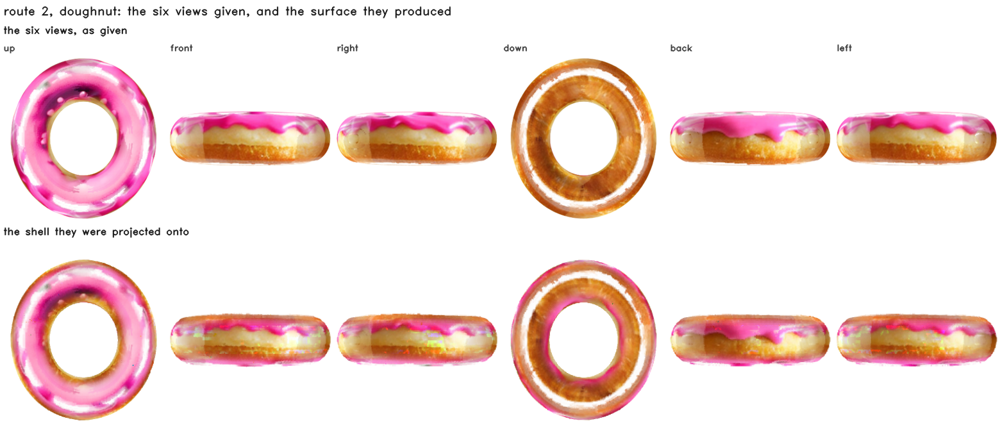
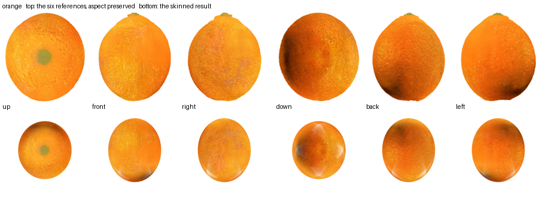
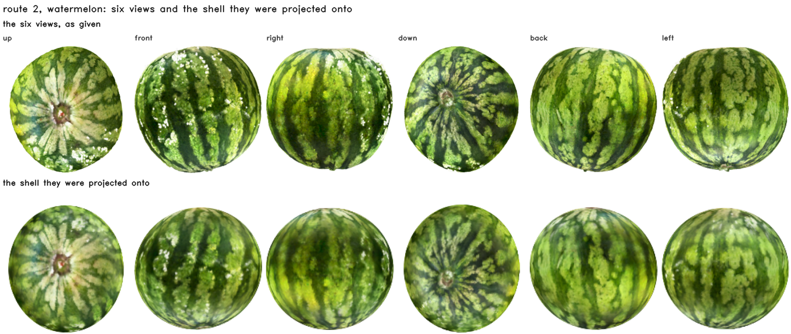
A cut arrives as a plane. Cells it crosses are subdivided until \(h_\ell \le h_{\text{target}}\), leaves are joined to their face neighbours, edges the plane separates are dropped, and connected components are the pieces. Written out: a leaf takes the sign of the plane at its centre, an adjacency survives when its two leaves agree, and a piece is a class of the equivalence relation that generates,
Equation (9) is the crossing test, and it is used twice. A cell of side \(h\) centred at \(\mathbf{x}\) is cut by the plane exactly when its centre lies within half the cell's diagonal extent along \(\mathbf{n}\), which is the right-hand side; that decides which cells are refined. It also bounds how far a point inside a cell can be from the plane, which is what section 4.3.5 uses to explain why occupancy alone claims material on both sides of a cut and why one sign test removes exactly that band and nothing else.
Adjacency is arithmetic too. A leaf's neighbour is at its own level or coarser (were it finer, the finer leaves on the shared face would find this one), so the coarser candidate is the neighbour's coordinate shifted right, which is floor division and therefore the cell containing it. With \(Q\) planes a leaf carries a side code, the \(Q\) signs at its centre, and adjacency survives only between equal codes.
Topology is voxel-approximate by construction; the visible face must not be, or it reads as a staircase. Per cut leaf we intersect the plane with the twelve edges, order the points around their centroid in the plane's own basis, and fan them: a convex polygon of three to six vertices lying on the plane. The residual is what the arithmetic leaves: measured on an axis-aligned plane through the origin it is 0.00e+00 exactly, which is that plane's own accident, and for an oblique plane it is the rounding of \(\mathbf{a} + t(\mathbf{b}-\mathbf{a})\), a small multiple of the machine epsilon. The claim worth making is not the size of that number but that there is no other error term: no primitive is asked to approximate the plane, so the only departure in a cut is the voxelisation of the silhouette. Every crossed cell is refined to the same depth, so cut polygons meet edge to edge and there are no T-junctions between them.
Converting only the cut face would require a second renderer and a per-pixel visibility rule between it and the first; converting the whole boundary removes both. It is also necessary rather than convenient: a Gaussian shell covers only 7 to 20% of the frame at alpha above one half, so at the silhouette a cut face shows through from the side it should be hidden on.
Converting only the cut face and leaving the photographed outside as Gaussians is what makes two renderers, a depth convention and a compositing step necessary. Converting the exterior as well removes the seam instead of managing it. The occupancy already holds the volume, so the exterior is its boundary, every face of an occupied cell whose neighbour is empty, and the same dual-grid encoder that handles the cut face takes the staircase off it.
A dual grid stores one node per active surface voxel, so it costs \(O(A/h^2)\): a plane costs as much as a crumpled sheet of the same extent. That is fixable inside the algorithm, because the dual vertex is already the minimiser of a quadric. For supporting planes \(\{(\mathbf{n}_i, d_i)\}\),
so a quadric is ten numbers. The property everything rests on is that it is additive over the set of planes, \(Q_{\text{parent}} = \sum Q_{\text{child}}\), exactly and with no reference to the mesh the children came from. The grid therefore collapses bottom-up: merge a \(2\times2\times2\) block, add the quadrics, solve \(A\mathbf{x} = \mathbf{b}\), and read the residual \(r = c - \mathbf{b}^\top\mathbf{x}\), the sum of squared distances from that one vertex to every plane the block covers. The tolerance is a length rather than a residual,
The collapse has one parameter, \(\tau\) in equation (12), and what it buys has to be read against what it costs. Sweeping it on the orange's own dual grid gives both at once: the node count that survives, and how far the surface moved to reach it. The distances are to the uncollapsed grid and not to an analytic surface, so this is a self-consistency measure of what the collapse discards rather than a surface-error measure against ground truth; the identity row reproduces the uncollapsed mesh, which is what makes it the reference. All distances are in units of \(h\).
| \(\tau\) | nodes | of uniform | node → surface | surface → node | symmetric | 95th | triangles |
|---|---|---|---|---|---|---|---|
| −1 (identity) | 442,253 | 100.0% | 0.000 | 0.000 | 0.000 | 0.000 | 934,520 |
| 0.10 | 315,661 | 71.4% | 0.024 | 0.262 | 0.163 \(h\) | 1.000 | n/a |
| 0.35 | 280,491 | 63.4% | 0.036 | 0.328 | 0.215 | 1.000 | 614,129 |
| 0.50 | 215,304 | 48.7% | 0.072 | 0.468 | 0.338 | 1.209 | 474,742 |
| 1.00 | 149,031 | 33.7% | 0.093 | 0.712 | 0.556 | 1.637 | 326,341 |
The doughnut's 530,958 nodes fall to 197,017 at \(\tau = 0.5\) and 143,247 at \(\tau = 1.0\). The identity row is the check that the rest means anything: an adaptive dual grid has no uniform mesh to hand back to the library, so the faces are rebuilt by resolving each crossed fine edge's four voxels to the nodes that survived, and with nothing merged that reproduces the library's own mesh to four parts in a million: 934,520 triangles, area 15.22346 against 15.22352, and the same 12,606 boundary and 41,947 non-manifold edges its mesh already has.
The O-Voxel patch is the visible boundary and takes no part in the physics; the cube hierarchy is the physical volume and answers every question about where material is. Piece identity is a relabelling and not a resampling. The existing particle set stays as it is, and each particle takes the piece of the leaf it falls in, so subdividing a cut band multiplies leaves and not particles. Collision is a floor division and an occupancy test, with one more of each when the coarse cell was refined.
\(q_P \in \{+1, -1\}\) is the side of the plane piece \(P\) lies on, taken as the sign that the majority of its leaves carry under equation (8); \(\operatorname{leaf}(\mathbf{x})\) is the leaf containing \(\mathbf{x}\), found by the floor division of equation (4). The sign test is applied only to points inside the band of equation (9), which is where a leaf can straddle the plane at all; a point further from the plane than half a leaf's diagonal extent is inside or outside on the strength of its leaf alone. That restriction is what makes the at-rest result below a consequence rather than a coincidence, and applying the test unconditionally would be a different and stricter collision model.
Near the cut the voxel test claims material up to half a leaf past where the cut is, because a leaf the plane passes through is occupied as a whole. One comparison fixes it: the point must be on the piece's own side of \(\Pi\). Measured on the current models, two freshly separated halves report material inside each other from occupancy alone; with the plane test, none of them do.
Material comes off the same feature. The decoder's per-cell feature is clustered into \(K\) classes, and each class is given a stiffness by the previous project's ordering: a class that lies mostly in the skin band is peel whatever its colour, since the shell term dominates; among interior classes the paler one is the structural tissue, pith or albedo or crust, and ranks stiffer. The ordering rather than the absolute value is the claim,
where \(\beta_j\) is the fraction of class \(j\)'s cells in the skin band, \(L_j\) its mean luminance, \(\mathcal{R}\) the rank normalised to \([0,1]\), and \(E_{\min} = 10^5\), \(E_{\max} = 5\times10^6\) the ends of the range the ordering is mapped onto. The weights 0.65 and 0.35 are the previous project's and are fixed rather than fitted; what is claimed is the ordering they produce, not the values. Each piece then carries a per-particle stiffness field instead of one modulus, and the solver runs once per piece.
Whether the solver can see any of that is a separate question, and it is decided before the first step is taken. MPM carries material through a background grid of spacing \(\Delta x\), and a feature thinner than about two grid cells is averaged away in the transfer. So the number that governs a hard shell is the shell's thickness in the solver's own units,
The percentile in (15) is over the shell cells \(\mathbf{k} \in \mathcal{S}\).
where \(L\) is the object's own extent, because the solver normalises the object into its grid box and a world length only reaches \(\Delta x\) through that scaling; \(\text{grid\_lim}\) and \(n_{\text{grid}}\) are the solver's box size and grid resolution, both read from the physics configuration. The condition for a stiffness contrast to survive is \(\tau \gtrsim 2\): MPM carries material through one background grid, and a feature thinner than about two of its cells is averaged into its surroundings by the particle-to-grid and grid-to-particle transfers. We take that threshold from standard MPM practice rather than deriving it, and section 4.3 tests it rather than assuming it. Route 2 makes \(\tau\) something to solve for: \(t_{\text{shell}} \approx \beta h_f\), so the band width that reaches a given \(\tau\) is \(\beta \ge 2 L \Delta x / h_f\). Section 4.3 measures \(\tau\) on the existing objects, builds a lattice at the predicted \(\beta\), and reports what the solver does on either side of the threshold.
A rigid transform per piece is correct only while nothing bends. Each surface vertex is bound to its own piece's \(k\) nearest particles with weights fixed at bind time,
The weights are a smooth kernel over the \(k\) nearest particles, whose support is the \(k\)-th distance itself, so a vertex in a dense region binds tightly and one in a sparse region reaches further without a length scale being chosen anywhere,
\(\varepsilon = 10^{-12}\), which only keeps the outermost weight from being exactly zero. Because the weights sum to one and are fixed at bind time, any affine motion of the particles is followed exactly: substituting \(\mathbf{x}_j(t) = \mathbf{A}\mathbf{x}_j(0) + \mathbf{b}\) into (16) gives \(\mathbf{x}_v(t) = \mathbf{A}\mathbf{x}_v(0) + \mathbf{b}\), which is why the residual below is a statement about bending and not about drift.
Everything below is a comparison, and every comparison has a picture. The organising axis is the two routes, a lattice quantised from a scan and a lattice generated from a field and skinned from six views, because after the second step nothing downstream can tell which was taken, so any result that separates them is a result about how an object is reached rather than about what happens to it afterwards. Comparisons against other work sit on the same footing with one exception, stated in section 4.2: route 1 quantises a released model, and the released watermelon's interior came from a fine-tuned checkpoint, so that lattice inherits one.
| the comparison | what it answers | its figure |
|---|---|---|
| route 1 against route 2 | cost of a generated topology | held-out cuts, transverse and longitudinal |
| the six views against the shell they made | projection accuracy | three per-object sheets |
| this work against FruitNinja and GaussianFluent | cost of holding a hidden volume | the same slab, four ways |
| this work against FruitNinja's released models | the cut a viewer actually sees | the same held-out planes, five rows |
| occupancy alone against occupancy and the cut plane | whether contact is real | the contact slab at four separations |
| with photographs against without | dependence on object-specific supervision | the same cuts, both ways |
| the cube renderer against the rasteriser | representation against renderer | the same cuts, four columns |
| uniform material against a field | solver-resolvable shell thickness | the section by class and by stiffness |
The same object appears with different cell counts in different tables because the tables measure different things, and the page previously left the reader to work out which. Every count used below is named here once.
| quantity | orange | watermelon | doughnut | what it is |
|---|---|---|---|---|
| route 1, coarse cells quantised | 759,353 | 553,043 | 517,166 | before the occupancy is made solid |
| route 1, after closing and filling | 848,021 | 561,805 | 522,753 | the coarse occupancy the physics runs on |
| route 1, all cells, both levels | 877,494 | 1,741,169 | 797,838 | the lattice as stored; the storage and runtime tables use this. The doughnut has no released reconstruction, so its route 1 is a lattice built from a generated mesh by the older shell-and-fill path |
| route 2, all cells, both levels | 1,231,312 | 1,065,856 | 942,840 | the generated lattice; the material and collision tables use this |
| solid cells at cut time, route 2 | 894,304 | 748,248 | 567,448 | the coarse solid set the cut is computed on |
| leaves after one cut | 924,252 | 620,162 | 545,586 | the cutting table of section 4.5.1, band included |
| cells after the section fill | 1,059,348 | 2,534,444 | 809,318 | a separate solidity pass used only by the cross-section table |
One cut on the orange is +98,714 leaves, measured on route 1's 848,021 solid coarse cells with the plane and refinement depth the storage section uses, and that is the figure to quote. Section 4.5.1's +86,776 is the band at a different refinement depth, and section 4.1.2's 1,157,328 is the leaf count after three cuts rather than one. Neither is wrong; both were previously presented in a way that invited reading them as the same quantity.
The consequence of those being two builds is not cosmetic and belongs with the physics: section 4.3.2 measures the doughnut's shell at 3.0 fine cells and predicts that about seven are needed, while the build section 4.3.3 actually simulates measures 4.1 fine cells at the same nominal \(\beta = 3\). Scaling the prediction on the tested build instead gives \(\beta \approx 5\), and that build's \(\beta = 5\) row reports \(\tau = 1.57\), which does not cross the threshold. So the agreement between "needs about seven" and "\(\beta = 7\) reaches \(\tau = 2.06\)" is not evidence that the arithmetic predicts; it is two numbers from two lattices that happen to meet.
Two further counts are not lattice sizes: 850,822 solid cells refining to 1,159,634 leaves is the three-cut figure in the opening video, and the doughnut appears at 1,129,008 cells in section 4.3.3 because that is a rebuild at \(\beta = 3\) rather than the lattice the rest of the paper uses. Section 4.3.2's shell measurement is on the latter and section 4.3.3's on the former, so the prediction and its test are on two different builds of the same object.
Every downstream operation reads three things and nothing else: occupancy at two levels, face adjacency, and one feature per cell. Both routes emit exactly these, so cutting, the physics and the material field cannot tell which route produced a lattice. One stage can distinguish two lattices, and it turns out not to distinguish the routes: the surface conversion colours from skin cells when they are more than a fifth of the lattice, and which side of that test a lattice falls on depends on the object. The note below gives the six measured skin fractions. The rest of this section measures the operations for which the route-independence claim holds.
Four properties the cutting code has, established on quantised lattices in the previous project before generated ones existed. They are listed here for what they are; section 4.1.2 is the run that asks whether they survive a generated lattice, and where the two disagree numerically it is because they are different measurements of the same property rather than the same measurement twice.
| property | what it buys |
|---|---|
| Exact polyhedral fragments | 0.00392 against 0.00457 relative volume error, with no subdivision against ten times the leaves |
| Adaptive band refinement | 20.6% / 32.6% / 35.8% fewer leaves at levels 1 / 2 / 3, at equal error and identical piece counts |
| Several cuts at once | +77 leaves for a nearby second cut against +3,983 for an unrelated one; exact agreement with one-at-a-time |
| Cut-time super-resolution | 95.2% of the generated detail kept at one pixel per leaf, 77.4% at six |
Those numbers were measured when only quantised lattices existed, so they say nothing about whether the four survive a generated one. The generated lattice differs in exactly the way that could matter here, since its cells sit on the grid these algorithms index into and the quantised one's do not. Run again on both, on the orange, with the same planes:
All four transfer. Exact fragments is marginally better on the generated lattice, where the split moves by 0.000 points rather than 0.004, because its cells sit exactly on the grid the clipping indexes into.
| property | route 1, quantised | route 2, generated |
|---|---|---|
| Several cuts at once three planes, then folded back |
+101,052 and +108,591 leaves for cuts 2 and 3; 8 pieces; all-at-once identical; folds back to 849,153 of 1,157,328 | +110,152 and +113,610; 8 pieces; all-at-once identical; folds back to 894,304 of 1,215,198 |
| Adaptive band refinement against uniform, at four tolerances |
33.5% / 32.4% / 27.4% / 16.3% fewer leaves | 32.1% / 31.0% / 26.1% / 15.5% |
| Exact polyhedral fragments how far the split moves |
0.004 percentage points of the object | 0.000 |
| Cut-time super-resolution detail kept, at 256 / 512 / 1536 px |
93.4% / 77.4% / 74.6% | 100.0% / 76.1% / 73.2% |
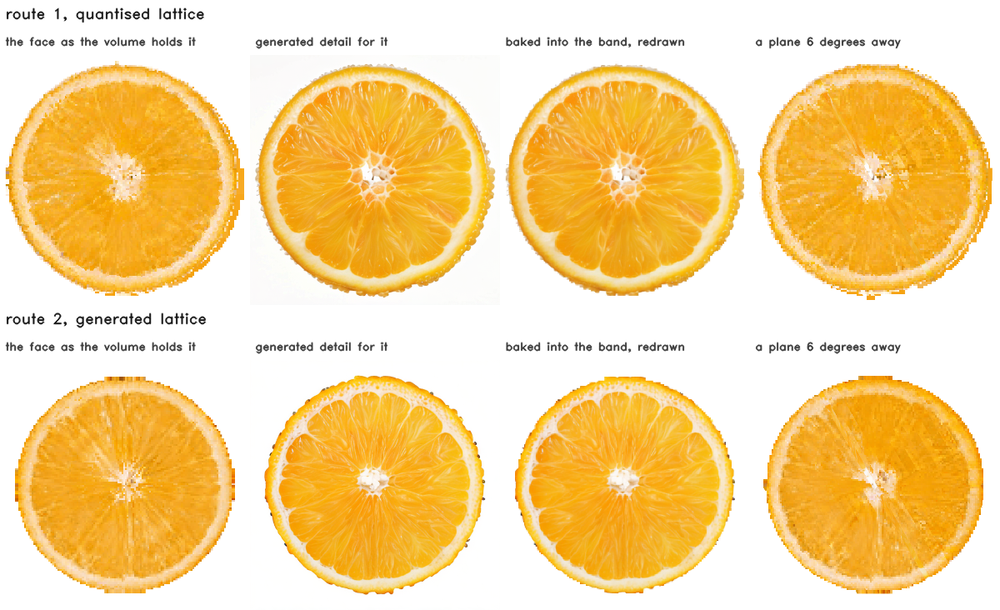
Two published methods fill an object's interior with Gaussian primitives so that a cut reveals something: FruitNinja [3], which supervises the interior with depth-conditioned diffusion, and GaussianFluent [24], which densifies it under generative guidance and then simulates fracture. They are compared here on four things: what the interior costs to hold, what it looks like on terms none of the three methods chose, what a held-out cut scores through one evaluator, and what each method depends on. The last is the axis. FruitNinja's published interiors come from a diffusion model fine-tuned on the object's own photographs, and that model is not released; GaussianFluent needs no fine-tuned model, and neither does this work, so the reproduction anyone can perform is the one without it.
FruitNinja's released watermelon is redistributed by GaussianFluent [24]: the same 541,266,069 bytes and the same MD5 as the model route 1 quantises. The two representations can therefore be compared on the same object, from the same source file.
| watermelon | FruitNinja, as released | this work, route 1 | |
|---|---|---|---|
| primitives / cells | 7,959,789 | 1,741,169 | 4.6× fewer |
| as stored, cells only, index implicit | 425.1 MiB | 56.5 MiB | 7.5× less |
| with the sparse index the lattice needs | 425.1 MiB | 76.4 MiB | 5.6× less |
| with the dual-grid exterior as well | 425.1 MiB | 163.5 MiB | 2.6× less |
| opacity | 1.0000 at the median and the 10th percentile | n/a | opaque by construction |
| support scale \(\sigma\) | 1.11e−7 | n/a | |
| spacing \(h\) | 0.0036 | 0.0172 | |
| \(\rho = \sigma/h\) | 3.1e−5 | 0.26 as splatted; n/a as a cube volume | |
| primitives per unit volume | 1,029,854 | 137,000 |
Storage says what each costs, not what each produced. Every method has its own frame, scale and renderer, so a comparison of the interiors routes through none of them: for each model, the plane through its own centroid, the primitives within a slab of half-width 1% of its own extent, so 2% thick, projected orthographically, normalised by its own projected radius, opaque and nearest-first, which all three are, at median and tenth-percentile opacity 1.0000.
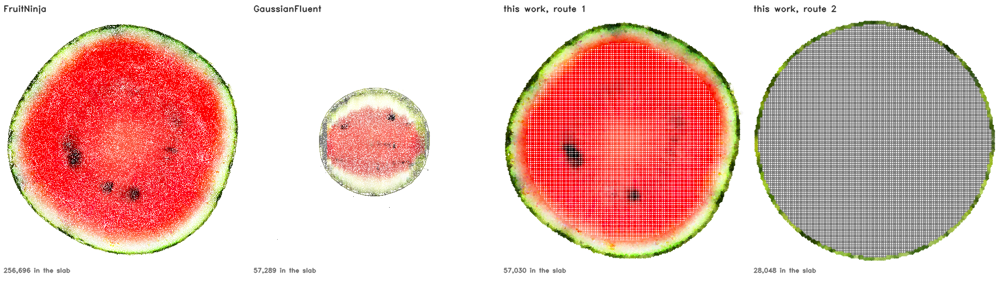
Measured on the images each method's own rasteriser produced, over the same hundred held-out transverse cuts at 512 px, the picture is different and coverage barely separates the released models:
| unpainted inside the section, own rasteriser, 100 cuts | watermelon | orange |
|---|---|---|
| FruitNinja, released model | 0.21% | 0.90% |
| FruitNinja, stock checkpoint | not run | 11.40% |
| GaussianFluent, released model | 0.10% | no orange released |
| this work, route 1 | 0.17% | 0.18% |
| this work, route 2 | 0.00% | 0.01% |
The one row that is not under a percent is the stock-checkpoint reproduction, at 11.40%, and it is a result rather than an embarrassment: without the fine-tuned model the supervision leaves the interior sparse as well as brown, so the same collapse shows in coverage and in FID.
Two things have to be said about that table. Every row in it, ours included, is a Gaussian render: a route-2 cell carries fourteen numbers and is splatted like any other primitive, at a median \(\rho\) of 0.26, which the sweep below shows is inside the window where a Gaussian set pays little for coverage. So this is not yet a comparison between a cube and a Gaussian, and the sentence an earlier version of this page put here, that a cube reaches zero without a parameter, was not supported by it.
And a coverage number at one pixel count says nothing, which is the objection that retired the footprint figure and applies here too. Swept over resolution, on the watermelon, six transverse cuts per cell, with the cube volume rendered by cube lookup rather than by splatting and with supersampling off, so that every row is one sample per pixel. That last point is not incidental: the cube march defaults to two-by-two supersampling, and measuring it that way against Gaussian rows that get one sample gives the cube four times the sample density at the resolution where the argument is made. With supersampling on it reads 0.02 / 0.05 / 0.06% instead of the figures below, which is a small difference and would have been an unfair one. The row above is a hundred cuts at 512 px and these are six at each of three sizes; they are separate experiments and the counts are given so they are not read as one:
| unpainted inside the section, watermelon | 256 px | 1024 px | 2048 px |
|---|---|---|---|
| FruitNinja, released model (3DGS) | 0.13% | 0.39% | 2.37% |
| GaussianFluent, released model (3DGS) | 0.05% | 2.03% | 38.73% |
| this work, route 2, splatted (3DGS) | 0.00% | 0.45% | 3.32% |
| this work, route 2, as a cube volume | 0.04% | 0.07% | 0.07% |
This is the claim, and it is not the one the withdrawn figure made. Coverage from a splatted representation is resolution-dependent for every model including ours: at 256 px they are all under two tenths of a percent and indistinguishable, and by 2048 px GaussianFluent's section is 39% background (32.9 to 49.5 across the six cuts), FruitNinja's 2.4% (1.5 to 3.4) and our own splatted lattice's 3.3% (2.5 to 3.8), against the cube volume's 0.07% (0.06 to 0.09). The cube volume does not move, 0.02% to 0.06% over three octaves, because a cell's support is the cell and a pixel either falls inside an occupied one or does not. What a Gaussian buys with enough primitives at a chosen zoom, a cube has by construction at every zoom, and that follows from what a cell is rather than from a number that happened to come out well. It is measured on one object at three image sizes, on six cuts each, and the other two objects and the intervening sizes are not run.
| watermelon | FruitNinja | GaussianFluent | this work, route 1 | route 2 |
|---|---|---|---|---|
| primitives / cells | 7,959,789 | 1,381,100 | 1,741,169 | 1,065,856 |
| stored, cells only | 425.1 MiB | 310.8 MiB | 56.5 MiB | 34.6 MiB |
| stored, with the sparse index and the exterior surface | 425.1 MiB | 310.8 MiB | 163.5 MiB | 62.6 MiB |
| higher-band SH coefficients | 0 | 45 (76% of its bytes) | 0 | 0 |
| support \(\sigma\) / cell \(h\) | 1.11e−7 | 1.35e−9 | 0.0172 | 0.0172 |
| that, against one pixel in the slab figure | 47,053× smaller | 5,067,762× smaller | 3.3 pixels across | 3.3 pixels |
| primitives in the slab | 256,696 | 57,289 | 51,763 | 34,587 |
| unpainted at each primitive's own footprint (withdrawn as a fidelity measure: it charges a Gaussian its \(\sigma\) and credits a cell its \(h\), and our cells carry Gaussians at \(\sigma \approx 0.26h\)) | 20.5% | 46.7% | 5.7% | 6.1% |
| unpainted, own rasteriser, 512 px | 0.21% | 0.10% | 0.17% | 0.00% |
| unpainted, own rasteriser, 2048 px | 2.37% | 38.73% | not run | 3.32% |
| the same lattice as a cube volume, 2048 px | n/a | n/a | not run | 0.07% |
The obvious reply to any of this is that a Gaussian's support is a free parameter, so make it bigger. FruitNinja [3] asserts the trade in the form \(\rho \ll 1\) leaves holes in the volume and \(\rho \gtrsim 1\) blends across material boundaries, and asserting a trade is not the same as showing that no setting of its parameter escapes one. This measures both branches against a reference with no scale parameter at all: a piecewise-constant cube lookup that gives each pixel the colour of the cell containing it, so every cell edge is a step and there is no support to tune. That is not equation (18), which reconstructs trilinearly over eight cell centres and therefore has a one-cell support of its own. Holes are pixels inside the true section the Gaussian render left as background. Blending is how much more the Gaussian render disagrees with that reference at material boundaries than it does away from them, since a large Gaussian disagrees with a piecewise-constant reference everywhere simply by being smooth, and only the excess is blending.
| \(\rho = \sigma/h\) | orange | watermelon | doughnut | |||
|---|---|---|---|---|---|---|
| holes | blending | holes | blending | holes | blending | |
| 0.0001 | 44.7% | −0.09 | 16.5% | −0.07 | 44.4% | −0.02 |
| 0.01 | 44.4% | −0.09 | 16.3% | −0.07 | 44.2% | −0.02 |
| 0.05 | 37.1% | −0.10 | 11.8% | −0.06 | 38.7% | −0.02 |
| 0.10 | 17.5% | −0.09 | 2.6% | −0.05 | n/a | n/a |
| 0.25 | 0.0% | +0.005 | 0.0% | +0.020 | 0.0% | −0.009 |
| 0.50 | 0.0% | +0.028 | 0.0% | +0.045 | 0.0% | +0.011 |
| 1.00 | 0.0% | +0.107 | 0.0% | +0.072 | 0.0% | +0.030 |
| 1.50 | 0.0% | +0.198 | 0.0% | +0.089 | n/a | n/a |
| 2.00 | 0.0% | +0.226 | 0.0% | +0.097 | 0.0% | +0.074 |
| 3.00 | 0.0% | +0.197 | 0.0% | +0.105 | n/a | n/a |
At 1024 px, one plane through the middle of each object, the same plane for every \(\rho\), on this work's own primitive set so that only \(\sigma\) changes. The doughnut's missing cells are values not swept for it rather than failures. Both branches are there and neither is avoidable, but the curve is not the one that assertion implies. The negative blending values at small \(\rho\) are the measure reading a render that is mostly holes: with most of the section unpainted, the disagreement away from boundaries exceeds the disagreement at them and the excess goes below zero, so the column only means anything once the holes are gone. The hole branch does not bite gradually below one: it is flat and severe from \(10^{-4}\) to \(0.05\) and then collapses to nothing between 0.10 and 0.25. The blending branch rises through \(\rho = 2\) on all three objects, reaching a mean absolute colour disagreement at material boundaries, beyond what the same render shows away from them, of 0.226 on the orange, 0.097 on the watermelon and 0.074 on the doughnut; on the orange it then falls back to 0.197 at \(\rho = 3\), where the primitives are large enough to be disagreeing everywhere. Between them is a window, roughly \(0.25 \le \rho \le 0.5\), where a Gaussian set does pay very little for either, and the models this work trains sit inside it at a median \(\rho\) of 0.26.
So the answer to "just make them bigger" is: on a fixed primitive set it works, within a window you have to find, and it is not what the published models do. FruitNinja sits at \(\rho = 3\times10^{-5}\), four orders of magnitude to the left of that window, and GaussianFluent's \(\sigma\) is two orders smaller again, though its own nearest-neighbour spacing is not published so no \(\rho\) can be formed for it here, where the table says 16 to 45% of a section is unpainted for a primitive set of this size. Their renders are not full of holes because they buy coverage the other way, with 7,959,789 and 1,381,100 primitives against this lattice's 1,741,169 quantised and 1,065,856 generated. The sweep above is on the orange's 877,494, which is a lattice of one particular size; whether an 8-million-primitive set at \(\rho = 0.25\) blends or merely covers is the same experiment on their primitive sets and is not run here. That is the trade this paper is actually about, and it is a trade about count rather than about support: a cube's support is its cell, so it covers exactly, at any resolution, with no window to find and no parameter to set.
FruitNinja supervises the interior with depth-conditioned diffusion on cross-sections, and its published results use a model fine-tuned on the object's own photographs. That fine-tuning is not released, so the reproduction anyone outside the group can actually perform is the procedure without it: the same base depth2img checkpoint, the same prompt, and nothing fitted to this fruit. Running that arm is one environment variable: removing the photograph directory switches the supervision from photographs back to the diffusion model that FruitNinja specifies.
| orange, 100 held-out cuts per family | transverse FID | longitudinal FID |
|---|---|---|
| route 1, supervised by the photographs | 91.5 | 222.8 |
| route 2, supervised by the photographs | 74.1 | 286.8 |
| no fine-tuning: base diffusion, no photographs | 90.1 | 213.5 |
| the photographs against each other | 46.3 | 70.2 |
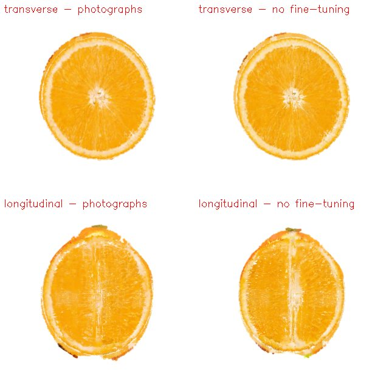
The interesting question is whether that holds for the method being reproduced. We have the run: FruitNinja's own trainer, its own Gaussian representation and its own filled model, with the stock depth2img checkpoint in place of the fine-tuned one, 200 epochs, scored on the same hundred planes as every other row.
Two things differ between that row and the released one, and only one of them is the fine-tuning. The released model is the authors' own training run at their own budget and settings; ours is a 200-epoch reproduction. The 276-point gap is therefore the sum of removing the fine-tuned checkpoint and whatever the reproduction gap is, and nothing here bounds the second term. Bounding it needs the same 200-epoch run with the fine-tuned checkpoint, which is the one artefact FruitNinja does not release.
| orange, the effect of removing the fine-tuned model | transverse FID ↓ | longitudinal FID ↓ |
|---|---|---|
| FruitNinja, released model (with its fine-tuning) | 102.2 | 269.6 |
| FruitNinja's pipeline, reproduced with a stock checkpoint | 378.7 | 511.6 |
| this work, route 1 (photographs) | 91.5 | 222.8 |
| this work, no fine-tuning and no photographs | 90.1 | 213.5 |
| the photographs against each other | 46.3 | 70.2 |
What the row does support without that caveat is the comparison inside each column. This work's two arms, with and without object-specific supervision, are the same code at the same budget and differ by 1.4 FID. FruitNinja's two arms are not the same run, so the 276 points are an upper bound on what removing its fine-tuning costs rather than a measurement of it. Even as an upper bound the difference is visible before any metric is computed: the reproduction's flesh goes brown and its segment walls turn into a crust, because the stock checkpoint has no idea what this particular fruit looks like inside and the Gaussian supervision has nothing else to lean on.
The tables above compare what each representation costs and what each puts inside an object.
Neither says which one draws a better cut, and the honest way to ask that is to send every released
model through one evaluator: the same held-out planes, the same reference photographs, the same
FID, PSNR, SSIM and LPIPS code. Both prior methods release models, so both are run. Every row below
is 100 rendered cuts per family, at transverse depths drawn from the middle 30 to 70% of the object
and at longitudinal azimuths at least six degrees from any azimuth the trainer walked, with the
transverse camera at the pole, where the look-at's roll is given a definite value rather than left
to rounding noise, so that no model is framed from inside itself. The
reference side is unchanged and small: six photographs for the orange, twenty transverse and
twenty-three longitudinal for the watermelon. A hundred renders against six photographs gives FID
an Inception covariance of rank at most five, so every difference in the orange table is inside its
own bias term and the ordering is worth more than the gaps.
KID is reported with the standard deviation over fifty subsets that the evaluator computes, and it
is the metric to read: it is unbiased where FID at this sample size is dominated by its own bias.
Read that way the orange separates less than the FID column suggests, since every arm's KID overlaps
FruitNinja's within about two standard deviations except route 2 and the stock-checkpoint arm, and
the watermelon separates more, with GaussianFluent's 151±10 clear of everything else. PSNR,
SSIM and LPIPS score each render against its best-matching reference, chosen by PSNR, which
is an upper bound on agreement rather than a paired score, and SSIM is computed on luminance
alone. On the watermelon the reference set scores 0.6290 SSIM against
itself, below all four methods, so SSIM has no discriminative power there and its column should be
read as a null result.
One thing route 1 does not escape, and it is worth stating before the tables: what it quantises is the released model, and for the watermelon that model's interior was produced by the fine-tuned checkpoint. The route-1 watermelon rows therefore inherit the artefact whose absence is this paper's comparison axis, which is part of why they land on top of FruitNinja's own numbers. The claim of independence from a fine-tuned model belongs to route 2, and to route 1 only when what it quantises did not come from one.
FruitNinja's models are in the frame our cameras already use, so they need no alignment. GaussianFluent's watermelon is its own capture in its own frame, and neither its upright axis nor a camera distance is published, so two things were chosen for it: the camera radius, set so that its silhouette fills the same fraction of the frame as ours and FruitNinja's (0.136 against 0.132 and 0.129), and the upright axis, tried as each of the three coordinate axes with the best of the three reported. It is also a different watermelon from the one photographed, which FID tolerates because it compares distributions, and which no per-pixel score really does.
| orange, 100 cuts per family | transverse FID ↓ | transverse KID ↓ | longitudinal FID ↓ | longitudinal KID ↓ | PSNR ↑ | SSIM ↑ | LPIPS ↓ |
|---|---|---|---|---|---|---|---|
| FruitNinja, released model (fine-tuned on this fruit) | 102.2 | 171±27 | 269.6 | 383±90 | 15.25 | 0.7561 | 0.4575 |
| FruitNinja's pipeline, stock checkpoint (our reproduction) | 378.7 | 667±103 | 511.6 | 825±79 | 13.09 | 0.6461 | 0.4619 |
| this work, route 1 | 91.5 | 142±21 | 222.8 | 275±96 | 16.13 | 0.7650 | 0.4070 |
| this work, route 2 | 74.1 | 101±21 | 286.8 | 382±102 | 16.43 | 0.7560 | 0.4048 |
| this work, no fine-tuning | 90.1 | 136±27 | 213.5 | 298±111 | 16.07 | 0.7632 | 0.4080 |
| the photographs against each other | 46.3 | n/a | 70.2 | n/a | 21.24 | 0.8047 | 0.1815 |
| watermelon, 100 cuts per family | transverse FID ↓ | transverse KID ↓ | longitudinal FID ↓ | longitudinal KID ↓ | PSNR ↑ | SSIM ↑ | LPIPS ↓ |
|---|---|---|---|---|---|---|---|
| FruitNinja, released model (fine-tuned on this fruit) | 182.0 | 223±15 | 211.0 | 244±19 | 11.32 | 0.7383 | 0.4651 |
| GaussianFluent, released model (its own watermelon) | 170.2 | 151±10 | 177.5 | 187±18 | 11.61 | 0.7119 | 0.4838 |
| this work, route 1 | 183.5 | 240±12 | 236.7 | 285±30 | 11.46 | 0.7308 | 0.4625 |
| this work, route 2 | 180.9 | 229±14 | 262.8 | 342±38 | 11.51 | 0.7302 | 0.4594 |
| the photographs against each other | 60.4 | n/a | 69.9 | n/a | 17.59 | 0.6290 | 0.2927 |
On the orange every arm of this work is ahead of FruitNinja's released model on every column, though on an instrument whose own noise floor is 46.3, and the arm ahead by the most on the longitudinal family is the one with no photographs of the fruit in the run at all. Its own pipeline with a stock checkpoint is four times worse than either.
On the watermelon the answer goes the other way and should be stated plainly: GaussianFluent's released model scores best, 170.2 and 177.5 against our 180.9 and 236.7 and FruitNinja's 182.0 and 211.0. It is a different watermelon from the one photographed, its cameras were chosen by us, and its upright axis is the best of three we tried while every other row is a single draw, so it is a minimum over configurations against single draws and not a like-for-like win. It is still the best FID in the table and nothing here is served by hiding that. What the table does not change is the cost: that model is 1,381,100 primitives in 310.8 MiB against 1,065,856 cells in 62.6 MiB counting everything this method needs, and at 2048 px its own rasteriser leaves 38.7% of its section unpainted where the same lattice drawn as a cube volume leaves 0.07%. The claim this work makes is about what a representation can state about a cut face and what it costs to hold a volume, not about winning a distribution metric at 100 samples against a reference set that scores 60.4 against itself.
These FID values are not the ones in section 4.4.2, which scores six cuts rather than a hundred; the two tables are internally consistent and should not be read across.
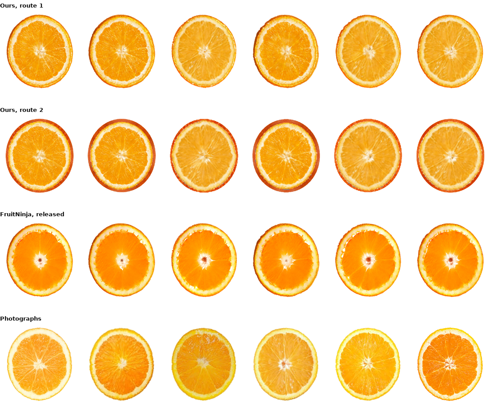
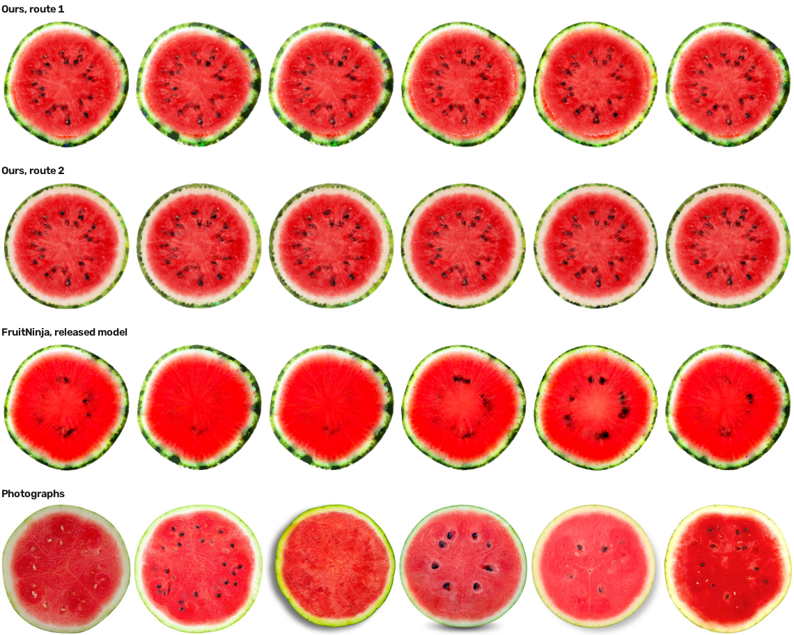
Everything in the table is measured here. Both prior methods release models and both were run: FruitNinja's in the frame our cameras already use, GaussianFluent's in its own frame with the camera distance matched and the upright axis chosen in its favour. FruitNinja was also reproduced from its own code with the stock checkpoint, which is the arm its published results do not cover. Its fracture and material solver are not reproduced, and GaussianFluent's own numbers for those are what its paper states.
| FruitNinja | GaussianFluent | this work | |
|---|---|---|---|
| what holds the hidden interior | opaque atomic Gaussians | densified Gaussians, generatively guided | a cube occupancy grid |
| what draws a newly exposed face | the same Gaussians | the same Gaussians | a dual-grid surface, or a march into the volume |
| primitives, watermelon | 7,959,789 | 1,381,100 | 1,741,169 route 1 / 1,065,856 route 2 |
| stored, everything the method needs | 425.1 MiB | 310.8 MiB | 163.5 MiB route 1 / 62.6 MiB route 2 |
| \(\rho = \sigma/h\) | 3.1e−5 (points, not blobs) | its spacing is not published | 0.26 for the Gaussians a cell carries; not applicable to the cube volume, which tiles |
| needs a fine-tuned diffusion model | yes, and it is not released | no | no |
| held-out cuts through this evaluator, orange | FID 102.2 / 269.6 | no orange released | 74.1 to 91.5 / 213.5 to 286.8 |
| held-out cuts through this evaluator, watermelon | FID 182.0 / 211.0 | FID 170.2 / 177.5 | 180.9 to 183.5 / 236.7 to 262.8 |
| the same pipeline with a stock checkpoint | FID 378.7 / 511.6 (our reproduction) | needs none | FID 90.1 / 213.5 |
| breaking into pieces | not addressed | fracture by continuum damage | connected components on face adjacency, one solver per piece |
| mixed materials | not addressed | the paper's subject | classes from the learned feature, stiffness by an ordering |
| physics | not addressed | CD‑MPM, brittle fracture | MPM, piece relabelling, occupancy collision, per-piece solvers |
| cut geometry | not addressed | damage field | exact planar polygons, no approximation term |
The lattice answers three physical questions with the same structure it uses to answer geometric ones: which material a cell holds, whether two pieces are touching, and whether a stiffness contrast survives the solver's grid transfer. They belong together because they share a failure mode. Each is decided at the resolution of a cell, so each is wrong in the same place, the band where the cut or the shell is thinner than the cell that represents it, and each is fixed by the same move: state the geometry exactly where the discretisation cannot.
The previous project decomposed an object into material classes without being told what they are: cluster the learned per-cell feature, merge classes whose appearance centroids agree, and an orange separates into peel, flesh, a transition and pith. The same decomposition runs unchanged on the cube lattice, because the thing it clusters, a learned feature and a position on a lattice, is what both representations carry. On the generated topologies it finds:
| object | class | cells | mean RGB | shell fraction |
|---|---|---|---|---|
| orange | deep pulp | 130,608 (10.6%) | 0.94, 0.61, 0.03 | 0.00 |
| bright pulp | 270,913 (22.0%) | 0.98, 0.69, 0.10 | 0.00 | |
| peel | 530,696 (43.1%) | 0.93, 0.62, 0.27 | 0.63 | |
| transition | 299,095 (24.3%) | 0.96, 0.69, 0.21 | 0.01 | |
| watermelon | flesh | 169,230 (15.9%) | 0.81, 0.07, 0.09 | 0.00 |
| rind | 244,766 (23.0%) | 0.43, 0.52, 0.24 | 1.00 | |
| lighter flesh | 328,179 (30.8%) | 0.92, 0.24, 0.24 | 0.00 | |
| pith | 323,681 (30.4%) | 0.80, 0.66, 0.50 | 0.23 | |
| doughnut | crumb | 166,915 (17.7%) | 0.58, 0.42, 0.23 | 0.00 |
| lighter crumb | 253,479 (26.9%) | 0.71, 0.57, 0.39 | 0.00 | |
| icing | 365,428 (38.8%) | 0.86, 0.54, 0.48 | 1.00 | |
| pale crumb | 157,018 (16.7%) | 0.82, 0.68, 0.52 | 0.12 |
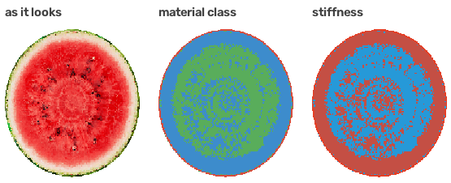
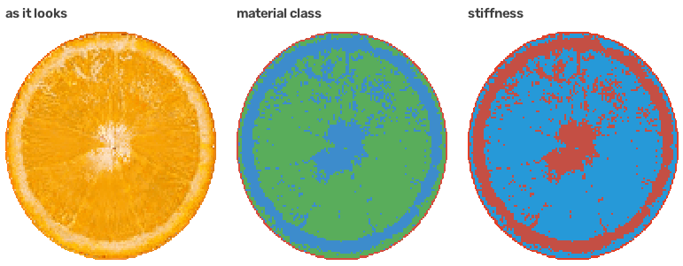
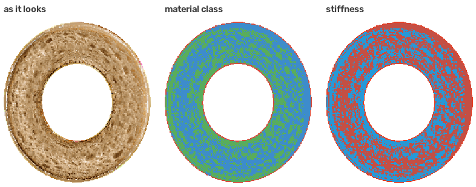
The previous project reported: “The material field changes the simulated dynamics but does not yet produce a hard shell around a soft interior, because MPM transfers through one background grid and our shell is one to three cells thick.”
That has a number, and the number can be worked out before any simulation runs. MPM moves particle quantities to a background grid of spacing \(dx\) and back, so a feature thinner than about two grid cells is averaged with its neighbours on the way through and comes back as the average. The quantity that decides whether a hard shell is possible is therefore the shell's thickness in MPM grid cells, and it had never been measured:
| object | shell thickness | in fine cells | in MPM grid cells | a stiffness contrast is |
|---|---|---|---|---|
| orange | 0.01910 | 3.2 | 2.00 | exactly at the threshold |
| watermelon | 0.02571 | 3.0 | 1.25 | not resolvable, needs 4.8 cells |
| doughnut | 0.01234 | 3.0 | 0.87 | not resolvable, needs 6.8 cells |
That threshold is what route 2 can act on. It builds the lattice from a field, so the skin band \(\beta\) is a number passed to the builder rather than a property of someone else's model. The prediction above says the doughnut needs about seven fine cells. Building it at four settings:
| \(\beta\), fine cells | cells | measured thickness | in MPM grid cells | |
|---|---|---|---|---|
| 3 (the default) | 1,129,008 | 4.1 | 1.17 | no |
| 5 | 1,486,904 | 5.5 | 1.57 | no |
| 7 | 1,827,832 (+62%) | 7.2 | 2.06 | yes |
| 9 | 2,148,936 (+90%) | 9.0 | 2.59 | yes |
The arithmetic says a shell under two grid cells cannot hold a stiffness contrast. Simulating both settings says whether that is what happens. The object falls under its own weight with the material field applied, and the solver reports each body's extent along the gravity axis as a fraction of its rest extent, separately for the cells the field called skin and the ones it called interior. A hard shell keeps its own extent and lets the interior lose more, so the sign of the gap between them is the question, not its size.
| doughnut, at deepest compression | shell, in grid cells | skin extent | interior extent | interior − skin |
|---|---|---|---|---|
| \(\beta = 3\), falling | 1.17 | 0.9220 | 0.9259 | +0.0040 |
| \(\beta = 7\), falling | 2.06 | 0.9334 | 0.9318 | −0.0016 |
| \(\beta = 3\), falling and cut | 1.17 | 0.9264 | 0.9333 | +0.0070 |
| \(\beta = 7\), falling and cut | 2.06 | 0.9280 | 0.9177 | −0.0103 |
Three things about that field, none of them in an earlier version of this section. It is not
equation (14): it is the weak two-rule field of material_field.py, level deciding
skin from interior and lightness grading the interior, which is the version a learned decomposition
has to beat rather than the clustered one equation (14) defines. Its numbers are the
orange preset, 8.0e6 against 6.0e5, applied to the doughnut. And the interior is
graded rather than constant, spanning 6.0e5 to 6.0e6, so the contrast between the shell and the
stiffest interior is 1.33× and not the 13× a shell-against-softest reading gives. A 1.33× contrast is a weak thing to look for a threshold with, and it is part of why the effect
is small. The 6.0e6 top of that interior range is what the grading rule can reach rather than what
it was measured to reach, so 1.33× is a bound and not a measurement.
Two confounds are not controlled. The same preset makes the skin lighter than the interior, 750 against 950 in density, so an extent measured under gravity is being pushed by a density contrast in the opposite direction to the stiffness one and the paper cannot separate them. And the \(\beta = 7\) build is not the \(\beta = 3\) build with a thicker skin: it has 62% more cells and a much larger skin fraction, so at 8.0e6 in the shell the whole body is stiffer, and both extents rise between the two settings, which is the signature of a stiffer object rather than of a resolved shell. The control that separates these is the uniform preset at both \(\beta\), which the material code ships for exactly this purpose and which is running as this is written.
The four gaps are 0.16%, 0.40%, 0.70% and 1.03% of the object's extent, so the effect is a fraction of a percent at three of the four settings and reaches 1% at one. Each cell is a single deterministic run: there is no repeat, no seed variation and therefore no noise floor to compare the sign flip against. It is detectable in the solver's report and not in a render. What it establishes is that the diagnosis predicted a threshold and that crossing it reverses the sign of the response, on one object. Whether a contrast large enough to look like a peel needs a thicker shell again, a finer solver grid or a different transfer is not answered here.
Equation (13) is two tests, and the second is the one that earns its place. At rest, with the two halves exactly as the cut left them, occupancy alone reports 2,698 particles of the orange inside the other piece, 2,699 of the watermelon and 943 of the doughnut; the sign test takes all three to zero.
That zero is a consequence rather than a finding, and it is worth writing down as one. A leaf assigned to piece B has its centre on B's side, so a point on A's side that falls inside a B leaf must lie within the leaf's half-diagonal of the plane, which is the bound of equation (9), and the sign test removes exactly that band. The at-rest column is therefore a check that the indexing has no aliasing bug, not evidence about contact. The evidence is the push column: penetration has to grow with separation and nothing in the construction forces it to.
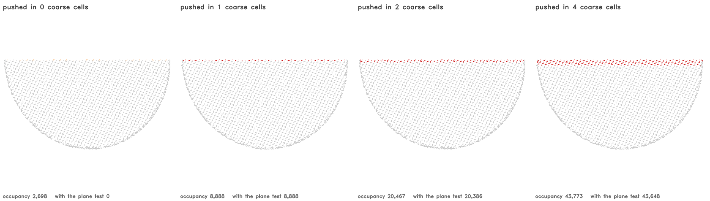
| object | particles | solid cells | at rest, occupancy alone | with the plane test | pushed 1 / 2 / 4 cells in |
|---|---|---|---|---|---|
| orange | 1,231,312 | 894,304 | 2,698 of 610,723 | 0 | 8,888 / 20,386 / 43,648 |
| watermelon | 1,065,856 | 748,248 | 2,699 of 527,791 | 0 | 8,978 / 20,373 / 43,781 |
| doughnut | 942,840 | 567,448 | 943 of 473,192 | 0 | 2,722 / 6,542 / 13,994 |
The last column is the check that the test is a contact test and not a coincidence: pushing one piece into the other by one, two and four coarse cells has to report more penetration each time, and it does, on every object.
Collision moves pieces; binding is what carries the visible surface with them. Equation (16) fixes each surface vertex to its own piece's nearest particles at bind time, so the surface follows whatever the solver does to them, including deformations no rigid transform can express.
Piece counts are checked on synthetic shapes whose answer is known, and two cases carry the test: a near-surface cut and a thin bridge. They test opposite failures. The thin cap is a separation the coarse grid cannot see, since every coarse centre falls on one side, and refinement has to find it. The one-cell bridge is the reverse: it is a connection that any labelling leaning on dilation or on a distance threshold will break, reporting two pieces for an object that is one.
| case | pieces | expected |
|---|---|---|
| ball, plane through the centre | 2 | 2 |
| ball, plane clear of it | 1 | 1 |
| torus, plane containing the axis | 2 | 2 |
| torus, plane across the axis | 2 | 2 |
| torus, plane above the tube | 1 | 1 |
| dumbbell, plane through the neck | 2 | 2 |
| ball, cap thinner than a coarse cell | 2 | 2 (1 without refinement) |
| thin bridge, plane clear of it | 1 | 1 |
| thin bridge, plane through it | 2 | 2 |
| thin bridge, plane along it | 2 | 2 |
Twelve cuts per model at depths and azimuths training never sampled, scored against the photographs. Six are transverse, across the object's upright axis, and six longitudinal, through it. The O‑Voxel columns register a renderer with the file that chooses the planes, so the planes, depths, cameras and order are identical by construction and only what draws the picture differs. The doughnut has one reference image per family, too few for a distribution, so it is asked instead whether every held-out transverse section still reads as an annulus.
Each score below is computed on six renders against six to twenty-three photographs. At that sample size the Inception covariance is rank-deficient and FID is dominated by its own bias [36, 37]; the photograph sets score 46.3 and 60.4 in FID against themselves split in half. On PSNR, SSIM and LPIPS the four route and renderer combinations differ by 0.29 dB, 0.010 and 0.019 on the orange and by 0.11 dB, 0.004 and 0.008 on the watermelon, and all four sit about 4.5 dB and 0.21 LPIPS below the photographs measured against each other. Differences of a few FID points are therefore reported and not claimed; the geometric results are what is argued from.
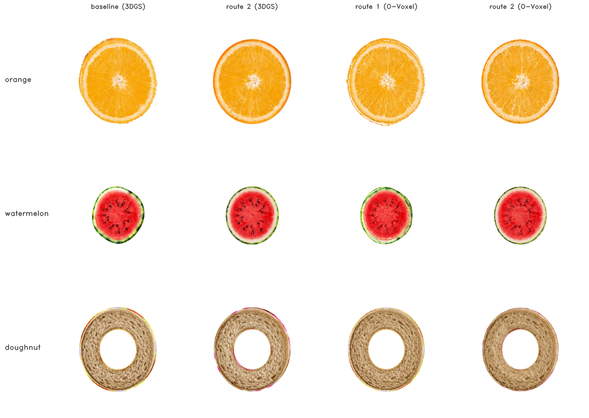
| transverse | route 1 (3DGS), the baseline | route 2 (3DGS) | route 1 (cube) | route 2 (cube) | |
|---|---|---|---|---|---|
| orange | FID | 86.4 | 66.5 | 130.5 | 107.9 |
| KID | 125.0e-3 | 88.7e-3 | 208.4e-3 | 158.8e-3 | |
| CLIP | 31.6 | 31.7 | 30.9 | 32.1 | |
| watermelon | FID | 187.4 | 180.9 | 188.3 | 167.5 |
| KID | 233.2e-3 | 226.3e-3 | 234.9e-3 | 206.9e-3 | |
| CLIP | 32.3 | 31.9 | 32.5 | 32.2 | |
| doughnut | annulus | 6/6 | 6/6 | 6/6 | 6/6 |
| The doughnut has no released reconstruction to quantise, so its “route 1” is a lattice built from a generated mesh by the older shell-and-fill route, a third path kept because it is what the baseline was established on. | |||||
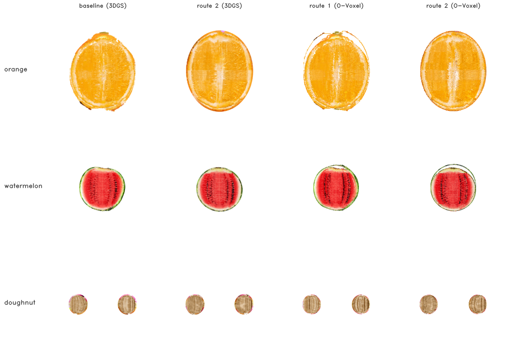
| longitudinal | route 1 (3DGS), the baseline | route 2 (3DGS) | route 1 (cube) | route 2 (cube) | |
|---|---|---|---|---|---|
| orange | FID | 147.6 | 247.3 | 292.6 | 370.2 |
| KID | 175.3e-3 | 303.7e-3 | 437.3e-3 | 585.4e-3 | |
| CLIP | 31.8 | 34.2 | 31.1 | 33.8 | |
| watermelon | FID | 266.0 | 244.4 | 314.9 | 263.5 |
| KID | 331.9e-3 | 300.9e-3 | 413.6e-3 | 320.1e-3 | |
| CLIP | 33.4 | 33.7 | 33.6 | 34.7 |
One statistic separates the two routes where FID does not, and it is given here for what it is rather than as a result: the mean blue channel over the pulp region of a section, on the orange, which is a proxy for how grey the flesh reads. Closer to the photographs is better, and route 2 matches them transversally and overshoots longitudinally.
| orange, pulp, mean blue channel | photographs | route 1 | route 2 |
|---|---|---|---|
| transverse | 0.149 | 0.168 | 0.148 |
| longitudinal | 0.179 | 0.221 | 0.234 |
Reference-based scores on the same held-out transverse cuts the FID table scores. Each render against its nearest reference, which is an upper bound on agreement rather than a paired score, since a cut at an arbitrary depth is not a photograph of any particular slice, but one measured identically for every column.
| orange, transverse | PSNR ↑ | SSIM ↑ | LPIPS ↓ | FID ↓ |
|---|---|---|---|---|
| route 1 (3DGS), the baseline | 16.71 | 0.7626 | 0.3908 | 86.4 |
| route 2 (3DGS) | 16.90 | 0.7551 | 0.3931 | 66.5 |
| route 1 (cube) | 16.64 | 0.7654 | 0.4000 | 130.5 |
| route 2 (cube) | 16.61 | 0.7621 | 0.4096 | 107.9 |
| the photographs against each other | 21.24 | 0.8047 | 0.1815 | 46.3 |
| watermelon, transverse | PSNR ↑ | SSIM ↑ | LPIPS ↓ | FID ↓ |
|---|---|---|---|---|
| route 1 (3DGS), the baseline | 11.49 | 0.7299 | 0.4618 | 187.4 |
| route 2 (3DGS) | 11.57 | 0.7294 | 0.4573 | 180.9 |
| route 1 (cube) | 11.46 | 0.7338 | 0.4588 | 188.3 |
| route 2 (cube) | 11.56 | 0.7319 | 0.4537 | 167.5 |
| the photographs against each other | 17.59 | 0.6290 | 0.2927 | 60.4 |
The band the plane crosses is a surface through a volume, so it should scale as \(N^{2/3}\). Measured at one lattice resolution it is 4.0 to 10.7% of the cells, which is consistent with that and does not establish the rate; a resolution sweep would. Where several planes meet they carve slivers whose size scales with the cell; a piece below a stated threshold rejoins the neighbour it shares the most faces with, taking the doughnut's three cuts from 18 raw pieces to 8 with the smallest kept at 2,287 cells.
| object | band leaves | total leaves | pieces, one cut | pieces, three cuts |
|---|---|---|---|---|
| doughnut | 21,760 (4.0%) | 545,586 | 2 | 8 (18 raw, slivers rejoined) |
| orange | 86,776 (9.4%) | 924,252 | 2 | 8 |
| watermelon | 66,408 (10.7%) | 620,162 | 2 | n/a |
This is the paper's first claim and the one a viewer sees. Each crossed cell contributes one convex polygon, obtained by intersecting the plane with the cell's twelve edges in closed form. No primitive is asked to approximate a plane, so there is no error to tune away and the only departure in a cut area is the voxelisation of the silhouette. A method that draws a cut face from whatever primitives lie near the plane has neither property, and cannot state either.
| shape | cut area, mesh | closed form | error |
|---|---|---|---|
| ball through its centre | 448.0 | \(\pi r^2\) = 452.4 | 1.0% |
| torus across its axis | 868.0 | \(4\pi R r\) = 879.6 | 1.3% |
A cut face is only as good as the volume behind it, so this is the volume drawn directly: planes swept through each object, every pixel resolved by cube lookup rather than by any renderer.
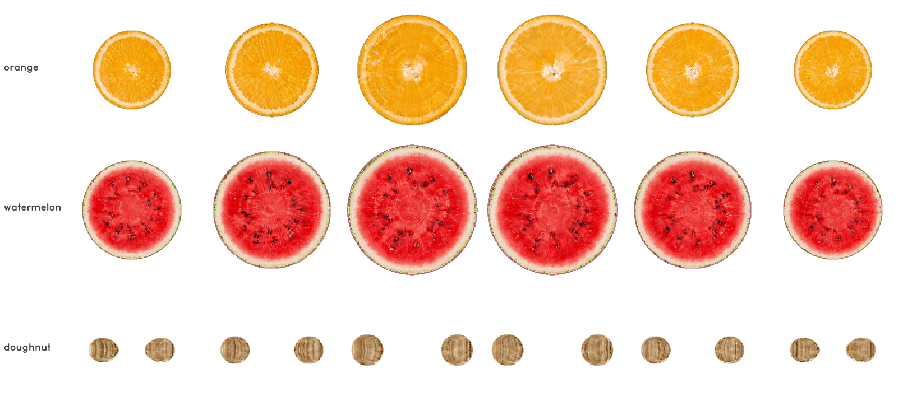
| object | cells after filling | holes, before | holes, after |
|---|---|---|---|
| orange | 877,494 → 1,059,348 | 14.9% / 8.7% / 6.6% | 0.28% / 0.02% / 0.00% |
| watermelon | 1,741,169 → 2,534,444 | 9.2% / 9.5% / 11.4% | 0.08% / 0.05% / 0.10% |
| doughnut | 797,838 → 809,318 | 10.6% / 10.7% / 11.4% | 9.5% / 8.7% / 10.2% |
The fraction of each section's own area the renderer leaves unpainted, before and after the occupancy is made solid. A cube's support is exactly its cell, so a gap is a hole in the occupancy and not a coverage parameter, which is why the first column exists at all. Those holes were always there, covered by sheer density (7,959,789 primitives, a million per unit volume) rather than by any primitive's support, which at \(\sigma/h = 3\times 10^{-5}\) reaches nothing.
The cuts measure the interior. The claim that the appearance is independent of Gaussian training is a claim about the outside, and a shell can be right in every section and still be wrong where two views meet, because a section never looks at a seam. These are the six directions the painting used, drawn from the dual-grid surface. This is also what the exterior representation is for: a slice does not need it, because the rind a slice shows is the slab’s own skin cells, but the whole object does.
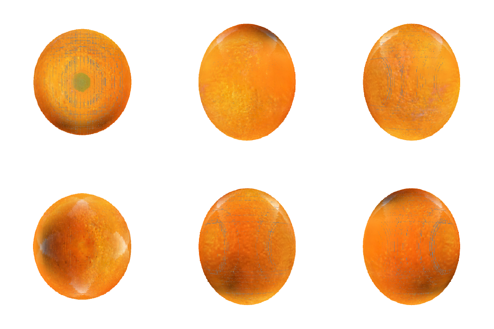
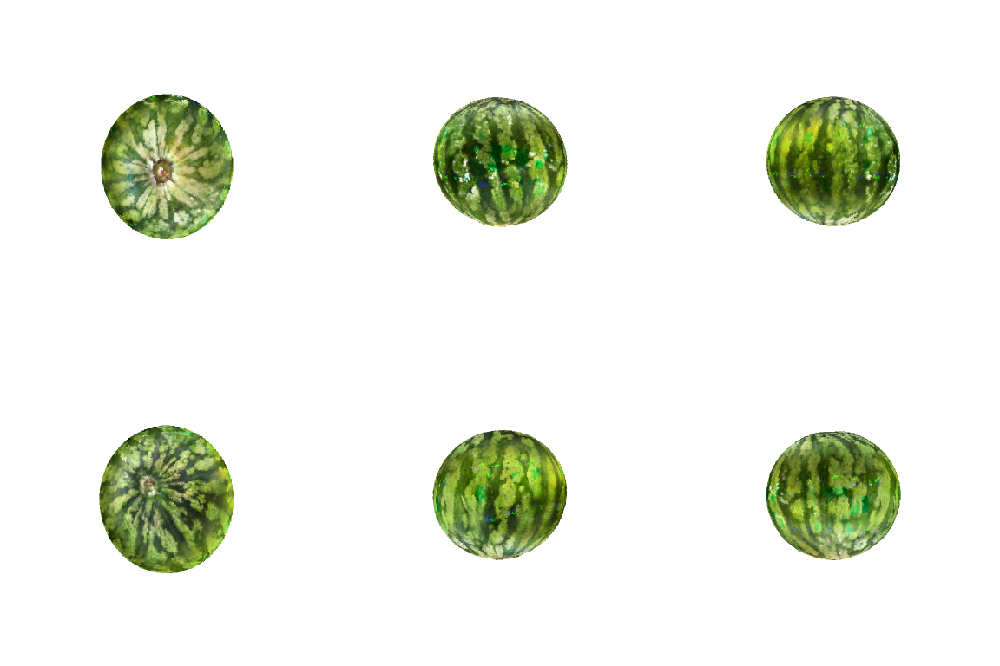
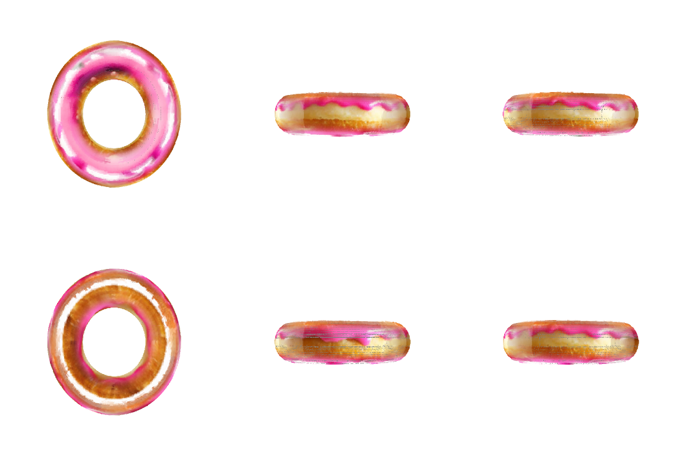
up, front, right, bottom row
down, back, left. The doughnut's icing is on its top and
its crumb underneath, which is the normal being read off the field rather than off the centroid;
the watermelon's stripes continue across the boundaries between views; the orange's underside is
dark because the object it was rendered from was photographed sitting on a surface, and that
baked lighting is carried rather than removed.
Each surface vertex takes its colour from the nearest skin cell: the boundary is the
occupancy's at any level, so 13.1% of these vertices are nearer to an interior cell than to a
skin one, and colouring from the nearest cell of any kind gives that 13% whatever the interior
holds.What remains between the O‑Voxel columns and the rasteriser is not capacity. The route-2 orange stores 1,231,312 primitives against the baseline’s 877,494, 65.8 MiB against 46.9. What was small was the use: a cell stores fourteen numbers and the first version of this renderer read the three that are colour. Of the other eleven, seven are the scale and the rotation, which is the primitive’s shape, and a shape is a reconstruction filter. On these models \(\sigma/h\) has median 0.26, so the rasteriser is not blurring across cells; what it has is anisotropy, median 116 to 1, inside them.
Timings on the orange, 877,494 cells, median of three. Everything except the render rate is single-threaded NumPy on one CPU core; the render rate is one card. The collision claim holds and the cutting claim does not: five million occupancy queries a second is what a floor division and a table lookup should cost, while thirteen seconds to label the pieces is not interactive.
| operation | time | rate |
|---|---|---|
| load the model from disk | 22.8 ms | |
| occupancy: close and fill | 1,696 ms | 405,606 cells/s |
| one cut: refine the band, label the pieces | 12,958 ms | |
| the cut face: exact polygons | 14,246 ms | |
| build the collision index | 151 ms | |
| label every particle by piece | 551 ms | 1,593,256 particles/s |
| one occupancy query over the particle set | 178 ms | 4,929,213 queries/s |
| render rate | cube volume, marching the face | Gaussian rasteriser | ratio |
|---|---|---|---|
| 512px | 6,415.6 ms 0.16 fps | 52.7 ms 18.98 fps | 122× |
| 1024px | 28,871.6 ms 0.03 fps | 81.7 ms 12.25 fps | 353× |
The third representation, the dual-grid exterior, is the one the method draws a whole object with, and it had no number here. It has one now, and it does not rescue the runtime story. There is no triangle rasteriser in this work: the surface is drawn by splatting points sampled on its triangles, three per triangle, which for the route-2 watermelon's 859,070 triangles is 5,154,420 samples.
| the dual-grid exterior, route 2 watermelon | ms/frame | fps |
|---|---|---|
| 512 px | 1,057 | 0.95 |
| 1024 px | 1,070 | 0.93 |
Single-threaded NumPy, median of three, and flat in resolution because the cost is the sample count and not the pixel count. At 512 px it is six times faster than marching the volume and twenty times slower than the Gaussian rasteriser; at 1024 px, where the march scales with pixels and this does not, it is twenty-seven times faster and thirteen times slower. A real triangle rasteriser would change this number by orders of magnitude and none is implemented, so what the table establishes is where the cost sits and not what the representation could cost.
The other half of the memory line, and the one the coarse interior exists for: storage should be proportional to hidden spatial complexity, with the high-resolution cost paid only where a cut has made something visible and returned when it has not. Counted as fields rather than as process memory: a Gaussian stores position, scale, rotation, opacity and colour; a cube cell stores a feature, a level and its membership, with the position implicit in the address.
Three accountings, and they answer different questions. Holding the count fixed and changing only the per-element fields is 1.6×. Paying for the integer coordinates a sparse lattice has to store, which every structure built over it keys on, takes that to 1.2×. Adding the dual-grid exterior, which the method needs and a Gaussian model carries inside its own primitives, takes the orange past parity: 55.6 MiB against 46.9 for route 1. The saving against the published models is therefore almost entirely in how many things there are, not in what each one costs, and on an object whose lattice is mostly fine cells it can vanish. None of these figures is measured against a compressed Gaussian model, which would move them again.
| orange | as Gaussians | as cube cells | a cut, while live | folded back |
|---|---|---|---|---|
| route 1, 877,494 cells | 46.9 MiB | 28.5 MiB (1.6×) / 38.5 with the index / 55.6 with the exterior | +98,714 leaves, 1.6 MiB (4.2%) | exactly returned |
| route 2, 1,231,312 cells | 65.8 MiB | 39.9 MiB (1.6×) / 54.0 with the index / 71.7 with the exterior | +97,209 leaves, 1.6 MiB (2.9%) | exactly returned |
run.sh and no object configuration: its three steps are run by hand
against a lattice, and the radii that produced the orange and the watermelon are not written
down anywhere, so only the doughnut can be rebuilt from what is published. And for two of the
three objects the six views are renders of the released reconstruction, so the route that is
“available always” is demonstrated end to end only on the object that never had
a scan.Separating the two jobs costs less than it sounds and gives back more than the rendering. The hidden volume becomes occupancy plus a low-dimensional feature, with no \(\sigma\) to tune against \(h\); the visible boundary becomes a surface with an explicit polygonal extent, which is what lets a flat cut face be flat rather than a plane approximated by ellipsoids. Cutting stays discrete where discreteness is cheap and becomes analytic exactly where a staircase would show. And the lattice's own advantages survive intact: connectivity, piece identity and collision are integer operations on a structured grid, not queries against arbitrary free particles.
Against the two methods that fill an interior with Gaussians, the difference is what a volume costs, and it is smaller than an earlier version of this work claimed. On the same watermelon the interior here is 1,065,856 cells generated or 1,741,169 quantised, against 7,959,789 and 1,381,100 primitives, and counting the sparse index and the exterior surface the method actually needs, 62.6 or 163.5 MiB against 425.1 and 310.8. Swept over four decades of \(\rho\) the trade is real in both directions, holes below 0.1 and blending above 0.25, and both published models sit far to the left of that window and buy their coverage with count instead.
Coverage is where the revision changed the answer. At 256 px nothing separates the four representations, and by 2048 px GaussianFluent's section is 38.7% background, FruitNinja's 2.4% and this work's own splatted lattice's 3.3%, while the same lattice drawn as a cube volume holds 0.07%. That is one object at three image sizes and it is the claim we would defend; the 20.5% and 46.7% this page once reported came from drawing each primitive at radius \(\sigma/2\), which is a fair question about what a primitive covers and the wrong instrument for what a renderer draws.
Appearance does not pay for that, and the appearance numbers do not all go one way. On the orange, every arm here beats FruitNinja's released model, and the arm that beats it by the most longitudinally saw no photograph of the fruit. On the watermelon, GaussianFluent's released model takes the best FID in the table at 170.2 against our 180.9 and FruitNinja's 182.0, on a different fruit and through cameras we had to choose for it. Every one of those numbers sits inside a reference set that scores 46.3 and 60.4 against itself, which is the reading we would defend: at this sample size these interiors are not separable by the metrics the task has, and what separates the representations is what they cost and what they can state about a cut face.
Where the metrics do separate something is dependence. Removing object-specific supervision from this work moves it 1.4 FID at fixed code and budget. FruitNinja's pipeline run from its own code with a stock checkpoint scores 378.7 against its released 102.2; that gap is an upper bound, since the two runs differ in training budget as well, but the collapse is visible in the render before any metric is computed. GaussianFluent needs no fine-tuned model either, and it fractures by continuum damage where this work separates by connected components, so fracture is a capability both have rather than an axis between them. What is left between the three is the volume itself: a cube tiles space and a sub-pixel Gaussian does not, and that is measured in section 4.2.2 on terms none of the three chose.
The two references that carry the most weight here are [6] and [11]: dual contouring is where the idea of one vertex per cell placed by a quadric comes from, and TRELLIS.2's Flexible Dual Grid is the implementation this work converts into. [4] is the lattice this work starts from, and its numbers are the baseline throughout.
@misc{cubeovoxel,
title = {Cube Interior + O-Voxel Cut Surface: the hidden volume stops being a rendering primitive},
author = {Anonymous},
year = {2026},
note = {Preprint}
}